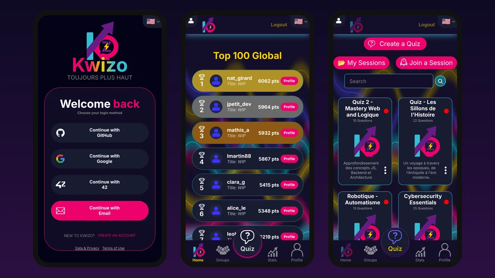

Live app · multiplayer
Kwizo
Our ft_transcendence: a real-time multiplayer quiz for the web, Android (APK) and iOS, made by a team of four; I was Product Owner and front-end developer. The real app and its real backend run in your tab: create quizzes, host a session and play live against bots.
Play
private repository